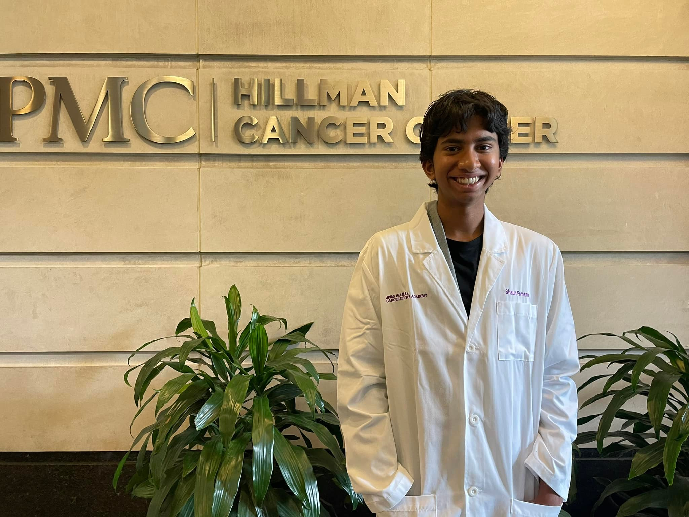
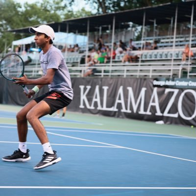
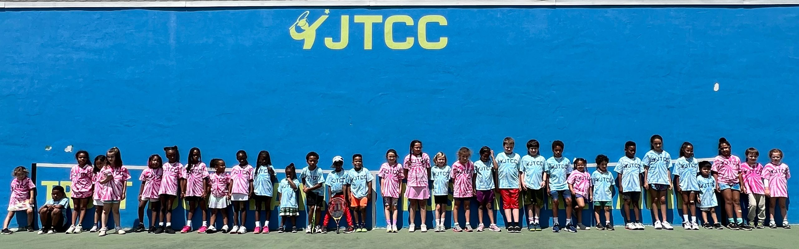
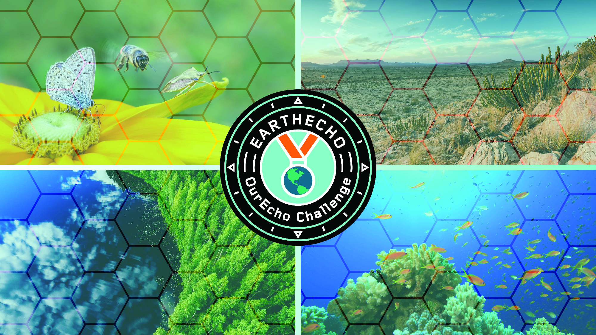

|
Shaun C Fernando
Academics & Research
I am a High School Junior at Pennsylvania Leadership Charter School, University Scholars Program(USP). As of the end of my 11th grade year, I have completed 16 Advanced Placement(AP) classes. I intend to take three additional AP Classes during my 12th grade year. My GPA is hovering around 4.6.
I am passionate about Physics and Calculus. My goal is to pursue a Bachelor of Science Degree at the intersection of Bio Medical and Aero Space Engineering. I have been conducting DNA, Microbial and Cancer research since 6th grade.
The Walter Reed Research Center supported my early research. During the summer of 7th grade I conducted my research at Central Catholic High School's AP Biology Laboratory under the supervision of Mr Mark Krotec. In 8th grade I worked as an independent researcher at home building my own Arduino-powered Robot, "Potamoi" to test the quality of water in the Monangahela, Allegheny and Ohio rivers. Additionally, I built a Mobile App, "myH2O" to display near-realtime water quality results. In ninth and tenth Grade I researched in
, Hillman Cancer Center Academy "YES" research program affiliated with University of Pittsburgh Medical Center (UPMC) under the mentorship of Dr. David Boon. During the two year program I built Machine Learning (ML) models to predict various cancer biomarkers.
For the aforementioned research, I received multiple awards. In eighth grade, Broadcomm Masters selected me as one of the top 300 Broadcomm Masters. I won the National Lemelson Early Inventor prize. I also won over 10 awards at the Pittsburgh Regional Science and Engineering Fair (PRSEF) and the Pennsylvania Junior Science(PJAS) Conference.
I won multiple Category awards for Robotics and Engineering in Pittsburgh Regional Science and Engineering Fair (PRSEF).
Prior to start of PGSS program at Carnegie Mellon University, I am looking forward to leading and helping the community as a Keystone Boys State member in the early summer of 2025.
Email /
Resume /
Github
|

|
|
Athletics
In addition to my academics and research persuits,I am a four star tennis recruite looking forward to playing NCAA tennis.
I am a nationally-ranked, Top-200 athlete in the graduating Class of 2026. At the international level,
My ITF ranking is around #1700 among Junior tennis players in the world. I have competed International Tennis Federation (ITF) tournaments
in the United States, Asia, Caribbean, and Canada. I have been competing in high-level USTA tournaments
ever since I was six years old. I have received both Doubles and singles titles in high-level USTA tournaments. During my high school tennis career,
I was awarded "Most Positive High School Athlete" for Tennis in Western Pennsylvania.
|

|
The Pennsylvania Governor's School for the Sciences (PGSS) is a rigorous, highly selective, free summer enrichment opportunity focused on science.
The program provides instruction in biology, chemistry, physics, mathematics, computer science, and more.
For the 2025 Summer program , I was one of 32 students selected for from an exceptional applicant
pool of 603 students from across the Commonwealth of Pennsylvania. My goal of attending is to help and take a lead for others to be aware of the poor water quality
that I found in Pittsburgh and vicinity rivers and create and pass a bill/policy in the state to identify the water quality, measure and remediate
The University of Pittsburgh Medical Center (UPMC) Hillman YES Academy is an opportunity for a deeper dive into research and science. Twenty-four students from underrepresented backgrounds will engage in two consecutive summers of research through the Hillman Academy. Additionally, the students will be paired with another mentor to help translate their research into science fair competition applications and presentations through mostly asynchronous feedback during the fall, winter, and spring.
This work will be supplemented with minimal webinars as well (fewer than 8/year).
Pennsylvania American Legion Keystone Boys State is a unique week long summertime educational program that does not emphasize classroom lectures and textbook learning. Instead, it focuses on participation and personal experience in a model state, complete with governing bodies and elected
public officials. It is designed to mirror the structure and operation of its respective state government.
|

|
2024 - 2026 : Tenth - Twelfth Grade ,
Lead volunteer coach for youth, veterans, and para-athletes in Junior Tennis Training Center. Top 3 in volunteer hours (2024–25)
JTCC Lead Volunteer Coach
Tennis for life
Shaun C Fernando
|
|

|
2021 - 2023 : Eighth - Ninth Grade ,
I started volunteering as an EarthEcho Water Challenge Ambassador and became a community scientist, leading water quality monitoring and advocacy efforts within
Pittsburgh three rivers. I worked with EarthEcho International to check, share, and protect local water resources. Later after the first year was promoted to a Senior Water Challenge Ambassador.
In 8th grade Spring I participted in EarthEcho Water Quality Challenge Competition as part of 2030 Save the world water initiative
EarthEcho Water Quality Challenge Competition
Presentation Video /
Presentation deck /
Water Quality Awareness /
Collect /
Measure
Shaun C Fernando
|
|
|
2021 Spring : Seventh Grade ,
Speech and Debate was offered in my middle school, but my Tennis tournaments interfered with Speech tournaments. So I picked tennis over speech and debate.
7th grade I did a speech competition for fun
Shaun C Fernando
|
|
|
2019-2020 : Sixth Grade, December 2019
This is the first part of the medley.
I hope you enjoy this and please consider subscribing!
Songs in the medley:
1. Guren no Yumiya
2. Shokei to Shikabane no Michi
3. Jiyuu no Tsubasa
4. Shinzou wo Sasageyo!
2019 winter medley
Shaun C Fernando
|
|
|
2016 : Fouth Grade Piano, Cello and French Horn
2016 Piano pre-recital /
2016 Piano-Flute duet recital /
2016 Cello recital /
practice makes perfect
Shaun C Fernando
|
|
|
2019-2020 : Sixth Grade ,
I used to do cubing every day and travel for cubing competions in the weekend. It slowed down when I started Tennis full time.
2019 winter Cubing Comp /
2019 Spring Teaching /
2019 Spring Showcase
Shaun C Fernando
|
|
|
2013 : Carlow University Montessori School, Pittsburgh, PA ,
Math is my favorite subject out of all from the time I was exposed to it at very early age of my life. Please enjoy, here I am explaining how to add large numbers with a different twist!
at the age of 5yrs
Shaun C Fernando
|
|
{kind=link}